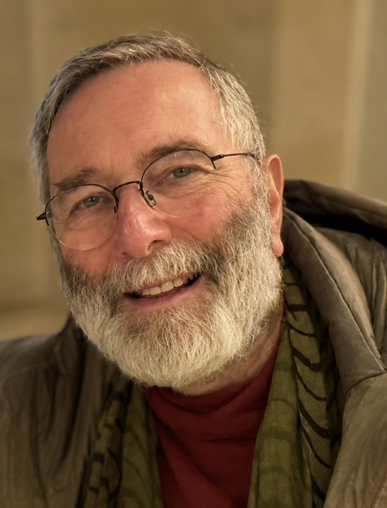

B.A. (Psych Hons), M.Clin.Psych.
Member of the Australian Psychological Society (MAPS) and of the APS College of Clinical Psychologists
Registered with the Psychology Board of Australia (AHPRA)

Brad Freeman is a psychoanalytic psychotherapist and clinical psychologist with over forty years’ experience in the mental health field. He began his working life as a psychiatric nurse at Rozelle Hospital in Sydney in the 1970s, placing first in the state examinations and receiving the Manning Norton Medal. He has since worked in Child and Adolescent Mental Health Teams in New South Wales and Tasmania, including as Senior Clinical Psychologist, and has spent most of his career working with children, adolescents, couples and families. He has thirty years’ experience in private practice, currently based in Hobart, Tasmania, and online.
Brad has special interests in early childhood, couple and individual psychotherapy, supervision, and reflective practice consultation to organisations — among them Child Protection Services, preschools, young mothers’ residential services, and Child and Family Centres. He has a longstanding interest in social dreaming and the application of psychoanalytic theory to contemporary culture.
He is a member of the NSW Institute of Psychoanalytic Psychotherapy (NSWIPP) and the Institute for Child and Adolescent Psychoanalytic Psychotherapy (ICAPP).
Brad writes poetry, is working on several novels, bushwalks, kayaks, and attempts to keep a busy Tasmanian farm Kelpie well entertained.
Consultations are by negotiation. Enquiries are welcome — see Contact.